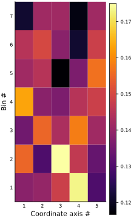
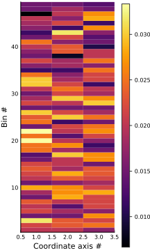
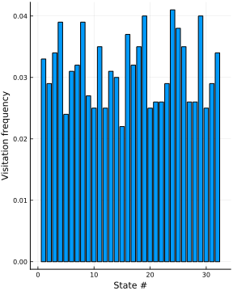

Marginal visitation frequencies
In a system of many variables, it can be useful to find the marginal visitation frequencies after assigning a partition to the set of points. The following function computes marginal visitation frequencies along the coordinate axes specified by along_which_axes for a set of points partitioned into boxes in the manner specified by ϵ.
Marginal visitation frequencies may also be computed directly from the partition representation of the points in question. Here, visited_bins is the output of either assign_bin_labels or assign_coordinate_labels.
In both cases, visitation frequencies are calculated by counting the number of points falling in each bin (i.e. the multiplicity of the bin), then normalizing by the total number of points.
marginal_visitation_freq(along_which_axes::Union{Int, Vector{Int}, AbstractUnitRange{Int}},
visited_bins::Array{T, 2}) where TCalculate marginal or joint visitation frequencies for a pre-binned set of points. Each column in visited_bins corresponds to a unique point, and contains the coordinate or integer representation of the bin containing that point.
Arguments
visited_bins: Contains a representation of the boxes containing each point.along_which_axes: Controls which axes to take the marginal visitation frequencies along. Settingalong_which_axesto a range 1:D, where D is the dimension of the corresponding state space, corresponds to taking the joint visitation frequency (basically, a D-dimensional histogram).npts: The number of points in the embedding, which is used as a normalization factor.
marginal_visitation_freq(
along_which_axes::Union{Int, Vector{Int}, AbstractUnitRange{Int}},
points::Array{T, 2},
ϵ) where TCompute marginal visitation frequencies for a set of points, given a partition scheme ϵ. The following ϵ will work:
ϵ::Intdivide each axis intoϵintervals of the same size.ϵ::Floatdivide each axis into intervals of sizeϵ.ϵ::Vector{Int}divide the i-th axis intoϵᵢintervals of the same size.ϵ::Vector{Float64}divide the i-th axis into intervals of sizeϵᵢ.
The argument along_which_axes controls which axes to take the marginal visitation frequencies along. Setting along_which_axes to a range 1:D, where D is the dimension of the corresponding state space, corresponds to taking the joint visitation frequency.
marginal_visitation_freq(
along_which_axes::Union{Int, Vector{Int}, AbstractUnitRange{Int}},
E::AbstractEmbedding,
ϵ)Compute marginal visitation frequencies for an embedding, given a partition scheme ϵ. The following ϵ will work:
ϵ::Intdivide each axis intoϵintervals of the same size.ϵ::Floatdivide each axis into intervals of sizeϵ.ϵ::Vector{Int}divide the i-th axis intoϵᵢintervals of the same size.ϵ::Vector{Float64}divide the i-th axis into intervals of sizeϵᵢ.
The argument along_which_axes controls which axes to take the marginal visitation frequencies along. Setting along_which_axes to a range 1:D, where D is the dimension of the corresponding state space, corresponds to taking the joint visitation frequency.
Examples
julia> using StateSpaceReconstruction
julia> using Plots; pyplot()
Plots.PyPlotBackend()Marginals for one variable at a time
Let's create a 5D dataset of 600 points and compute the marginals for each individual coordinate axis, given a partition where each axis is divided into 7 equal-length intervals.
julia> pts = rand(5, 600)
5×600 Array{Float64,2}:
0.0180786 0.89638 0.685923 0.646093 … 0.424613 0.954201 0.419335
0.236874 0.0133791 0.848108 0.658797 0.23627 0.674233 0.994846
0.971088 0.0498626 0.775786 0.0953248 0.413398 0.97865 0.88733
0.592881 0.483286 0.533146 0.426611 0.389378 0.962927 0.968118
0.102209 0.0749604 0.414024 0.467851 0.952668 0.496826 0.560723
julia> ϵ = 7
7
julia> Ms = [marginal_visitation_freq(i, pts, ϵ) for i = 1:5]
5-element Array{Array{Float64,1},1}:
[0.138333, 0.155, 0.135, 0.163333, 0.141667, 0.145, 0.121667]
[0.14, 0.13, 0.155, 0.138333, 0.145, 0.15, 0.141667]
[0.148333, 0.175, 0.143333, 0.136667, 0.116667, 0.138333, 0.141667]
[0.173333, 0.146667, 0.158333, 0.145, 0.136667, 0.121667, 0.118333]
[0.13, 0.133333, 0.141667, 0.148333, 0.156667, 0.148333, 0.141667]
julia> Ms = hcat(Ms...) # convert to array
7×5 Array{Float64,2}:
0.138333 0.14 0.148333 0.173333 0.13
0.155 0.13 0.175 0.146667 0.133333
0.135 0.155 0.143333 0.158333 0.141667
0.163333 0.138333 0.136667 0.145 0.148333
0.141667 0.145 0.116667 0.136667 0.156667
0.145 0.15 0.138333 0.121667 0.148333
0.121667 0.141667 0.141667 0.118333 0.141667
julia> heatmap(Ms, xlabel = "Coordinate axis #", ylabel = "Bin #", size = (300, 500));
Marginals for multiple variables
We can also compute the marginals of multiple variables. For this example, choose variables 1:2, 2:3 and [3, 5].
julia> pts = rand(5, 600)
5×600 Array{Float64,2}:
0.193061 0.0310545 0.253656 0.840001 … 0.421861 0.180382 0.504388
0.606313 0.828989 0.814277 0.0522668 0.851952 0.359988 0.0667639
0.436012 0.827749 0.870878 0.49436 0.556408 0.42572 0.893671
0.610232 0.714068 0.219496 0.278989 0.196014 0.617672 0.450928
0.0743475 0.0122511 0.0343249 0.645204 0.547938 0.726047 0.206004
julia> ϵ = 7
7
julia> Ms = [marginal_visitation_freq(i, pts, ϵ) for i = [1:2, 2:3, [3, 5]]]
3-element Array{Array{Float64,1},1}:
[0.02, 0.0216667, 0.0316667, 0.015, 0.0216667, 0.02, 0.0233333, 0.015, 0.0183333, 0.0283333 … 0.02, 0.025, 0.015, 0.0116667, 0.0166667, 0.0183333, 0.02, 0.00666667, 0.015, 0.015]
[0.02, 0.0233333, 0.0233333, 0.015, 0.0183333, 0.0133333, 0.02, 0.0283333, 0.0266667, 0.0266667 … 0.0233333, 0.0166667, 0.0216667, 0.0316667, 0.0116667, 0.0216667, 0.0166667, 0.02, 0.0183333, 0.015]
[0.0166667, 0.025, 0.0216667, 0.0266667, 0.0166667, 0.0216667, 0.0216667, 0.0216667, 0.0283333, 0.0216667 … 0.01, 0.015, 0.0133333, 0.0166667, 0.0266667, 0.0116667, 0.0283333, 0.0266667, 0.015, 0.0133333]
julia> Ms = hcat(Ms...) # convert to array
49×3 Array{Float64,2}:
0.02 0.02 0.0166667
0.0216667 0.0233333 0.025
0.0316667 0.0233333 0.0216667
0.015 0.015 0.0266667
0.0216667 0.0183333 0.0166667
0.02 0.0133333 0.0216667
0.0233333 0.02 0.0216667
0.015 0.0283333 0.0216667
0.0183333 0.0266667 0.0283333
0.0283333 0.0266667 0.0216667
⋮
0.025 0.0166667 0.015
0.015 0.0216667 0.0133333
0.0116667 0.0316667 0.0166667
0.0166667 0.0116667 0.0266667
0.0183333 0.0216667 0.0116667
0.02 0.0166667 0.0283333
0.00666667 0.02 0.0266667
0.015 0.0183333 0.015
0.015 0.015 0.0133333
julia> heatmap(Ms, xlabel = "Coordinate axis #", ylabel = "Bin #", size = (300, 500));
Joint visitation frequency
Computing the marginals for all available variables corresponds to computing the joint visitation frequency.
julia> pts = rand(5, 1000)
5×1000 Array{Float64,2}:
0.357796 0.52572 0.380205 0.485559 … 0.518374 0.855826 0.853357
0.109359 0.462349 0.505363 0.978401 0.928991 0.446497 0.657755
0.941219 0.0679282 0.166721 0.607947 0.207609 0.31452 0.705143
0.851138 0.202549 0.988398 0.501598 0.904572 0.442203 0.848886
0.82853 0.63268 0.150013 0.0819333 0.760057 0.371696 0.309975
julia> ϵ = 2
2
julia> jointvisitfreq = marginal_visitation_freq(1:5, pts, ϵ)
32-element Array{Float64,1}:
0.033
0.029
0.034
0.039
0.024
0.031
0.032
0.039
0.027
0.025
⋮
0.041
0.038
0.035
0.026
0.026
0.04
0.025
0.029
0.034
julia> bar(jointvisitfreq, size = (400, 500), legend = false)
Plot{Plots.PyPlotBackend() n=1}
julia> xlabel!("State #"); ylabel!("Visitation frequency");
The plot above shows the visitation frequency over the visited bins.